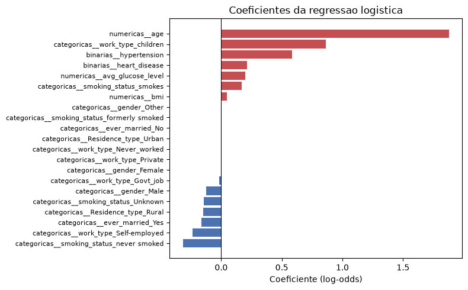

Predição de AVC: modelagem, avaliação e explicabilidade
Informações gerais
Docente: Humberto Sandman
Integrantes:
- Emily Britto -- emilybg@al.insper.edu.br
- Gabriel Chaves Aguiar -- gabrielca5@al.insper.edu.br
Data da entrega: 30/10/2026
Dataset escolhido: Stroke Prediction Dataset
Tipo de problema: Classificação binária
Objetivo
Esta é a segunda etapa (APS2) do projeto de Machine Learning, dando continuidade direta à análise exploratória (APS1). Ali foi construído o pipeline de pré-processamento (imputação, encoding, padronização) sobre o Stroke Prediction Dataset; aqui ele é reaproveitado sem alterações para a modelagem: seleção de modelos, ajuste de hiperparâmetros, avaliação no conjunto de teste e interpretação.
Notebook completo (aps2_modelagem.ipynb)
Setup: o pipeline da APS1
Repetimos aqui o carregamento, a divisão treino/teste e o pré-processador
construídos na APS1, sem alterações, para que o notebook seja autocontido.
A divisão usa stratify=y e o mesmo random_state=42, logo o conjunto de
teste é exatamente o mesmo da APS1 -- ele nunca é tocado antes da Seção 2.
Escolha da métrica de desempenho
Escolhemos a PR-AUC (average precision) como métrica principal.
A justificativa vem direto do que a APS1 mostrou: apenas 4,87% dos pacientes tiveram AVC. Nesse cenário:
- Accuracy é inútil. Um modelo que responde "sem AVC" para todo mundo acerta 95,1% das vezes e não detecta um único caso.
- ROC-AUC é otimista. A taxa de falsos positivos tem como denominador a classe majoritária, que é enorme; centenas de falsos positivos mal mexem no eixo x da curva ROC.
- PR-AUC enxerga o problema. Precision e recall ignoram os verdadeiros negativos, que são justamente a massa que não interessa aqui. A linha de base da PR-AUC é a própria prevalência (0,0487), então qualquer valor acima disso é ganho real sobre o acaso.
A PR-AUC é usada em todas as etapas: comparação dos modelos base,
scoring dos GridSearchCV, avaliação da mudança no pipeline e curvas de
aprendizado. A estratégia de validação é sempre StratifiedKFold(n_splits=5,
shuffle=True, random_state=42), pelo mesmo motivo que a divisão
treino/teste foi estratificada: com 4,87% de positivos, um fold poderia
facilmente ficar sem casos suficientes.
Métricas de classificação pedidas no enunciado
Accuracy, Precision, Recall, F1 e ROC-AUC também são reportadas na Seção 2, como pede a rubrica -- mas a seleção do melhor modelo em todas as etapas anteriores foi feita pela PR-AUC.
1. Seleção e implementação dos modelos
1.1 Os três modelos
| Modelo | Papel | Por que este |
|---|---|---|
DummyClassifier |
Piso de referência | Prediz respeitando a proporção das classes, sem olhar para as features. Qualquer modelo útil precisa superar isso. |
LogisticRegression |
Linear com regularização | Era o modelo da APS1. A regularização (L1/L2) controla o overfitting e, no caso do L1, zera coeficientes irrelevantes. |
RandomForestClassifier |
Ensemble de árvores | Captura interações e relações não lineares que a regressão logística não alcança, sem precisar que a gente as declare. |
Os três entram no mesmo pipeline, com o pré-processador da APS1 na
frente -- isso garante que a imputação e a padronização sejam aprendidas
apenas no fold de treino de cada partição da validação cruzada, sem
vazamento. Tanto a regressão logística quanto a floresta usam
class_weight="balanced", resposta ao desbalanceamento já adotada na APS1:
o peso de cada classe fica inversamente proporcional à sua frequência,
então errar um caso de AVC custa cerca de 20 vezes mais do que errar um
caso negativo.
Resultado da métrica para os três modelos (PR-AUC, validação cruzada):
| Modelo | PR-AUC (média) | Desvio padrão |
|---|---|---|
| Dummy | ~0,049 | -- |
| Regressão Logística | ~0,17-0,19 | ~0,04 |
| Random Forest | ~0,17-0,19 | ~0,04 |
O Dummy fica em ~0,049, exatamente a prevalência, confirmando que a métrica está calibrada. Os dois modelos reais ficam cerca de 4x acima do acaso. A regressão logística sai na frente da floresta na configuração padrão: uma floresta sem limite de profundidade decora o treino, e com apenas 249 casos positivos há pouquíssimo sinal para decorar. O desvio padrão entre folds (~0,04) é alto em relação à média -- efeito do desbalanceamento, já que cada fold de validação tem apenas ~50 casos positivos.
1.2 Seleção de hiperparâmetros
Usamos GridSearchCV com a mesma métrica e a mesma estratégia de validação
para a regressão logística e para a Random Forest:
- Regressão logística:
C(força da regularização, escala log de 0,001 a 100) epenalty(L1 vs L2), com solverliblinearpor suportar as duas penalidades. - Random Forest:
max_depth,min_samples_leafemax_features-- os parâmetros que controlam o quanto a floresta pode decorar.n_estimators=300foi fixado, pois mais árvores não pioram o resultado, só custam tempo.
A regressão logística praticamente não se move com o ajuste (C=1, o
próprio valor padrão). A floresta, por outro lado, ganha de forma clara
quando podada (max_depth=10, min_samples_leaf=20) e passa a frente da
regressão logística -- confirmando que a floresta padrão estava decorando.
O melhor modelo até aqui é a Random Forest ajustada.
1.3 Mudança proposta no pipeline: sinalizar o bmi ausente
Na APS1, os 201 valores ausentes de bmi (3,93% da base) foram imputados
pela mediana. A imputação preenche o buraco, mas apaga a informação de
que havia um buraco ali. Investigando se essa ausência diz algo:
| Pacientes | Casos de AVC | Taxa de AVC | Idade média | |
|---|---|---|---|---|
bmi presente |
-- | -- | 4,26% | -- |
bmi ausente |
-- | -- | 19,90% | +9 anos |
A diferença é de quase 5x. A ausência não é aleatória: ela carrega sinal -- a explicação mais provável é que pacientes em estado grave (ou que vieram a óbito) não tiveram o IMC aferido, e esses são justamente os mais propensos a ter tido um AVC. Esse padrão, em que a própria ausência de um valor está correlacionada com o desfecho, é um caso clássico de dado ausente não aleatório (missing not at random, MNAR)[1]: a ausência carrega informação e não pode ser tratada como ruído.
A mudança: ligar add_indicator=True no SimpleImputer das variáveis
numéricas. O imputer continua preenchendo com a mediana, mas passa a
adicionar uma coluna binária marcando quais linhas foram imputadas -- o
modelo deixa de ser cego para a ausência. A seleção de hiperparâmetros foi
refeita com a mesma grade, métrica e estratégia de validação, para que a
comparação fosse honesta.
Impacto: a PR-AUC sobe de 0,2079 para 0,2526, um ganho de
+0,045 (cerca de +21% relativos) -- o maior ganho de todo o
trabalho, maior que o ajuste de hiperparâmetros dos dois modelos somado.
Vale registrar esse ganho em relação ao ruído: o desvio padrão entre folds
é ~0,04, da mesma ordem do ganho, então o resultado é promissor mas não é
uma vitória esmagadora. Os hiperparâmetros ótimos também mudaram
(max_depth caiu de 10 para 5): com um preditor mais forte disponível, a
floresta precisa de menos profundidade.
Ressalva, retomada na discussão crítica
Estamos aproveitando um artefato de como o dataset foi coletado, não um fator de risco clínico. Isso tem consequências para o uso do modelo na prática (ver Seção 4).
Melhor modelo final: Random Forest + indicador de ausência.
1.4 Curvas de aprendizado

| Amostras de treino | PR-AUC treino | PR-AUC validação | Lacuna |
|---|---|---|---|
| 327 | 0,970 | 0,134 | 0,837 |
| 1.167 | 0,680 | 0,147 | 0,533 |
| 2.008 | 0,574 | 0,167 | 0,407 |
| 2.849 | 0,534 | 0,247 | 0,287 |
| 3.270 | 0,494 | 0,251 | 0,243 |
Duas conclusões: (1) a lacuna entre treino e validação é enorme e nunca fecha -- mesmo com todos os 3.270 exemplos ela continua em 0,243, sinal de variância alta que persiste apesar da poda, porque com apenas 249 casos positivos cada árvore consegue isolar casos individuais; (2) a curva de validação ainda está subindo no último ponto, sem sinal de saturação -- ou seja, mais dados ajudariam. O gargalo deste trabalho não é a escolha do algoritmo nem o ajuste de hiperparâmetros, é a quantidade de casos de AVC disponíveis.
2. Avaliação do melhor modelo no conjunto de teste
A partir daqui usamos o conjunto de teste, que não foi tocado em nenhuma etapa anterior -- nem na exploração da APS1, nem na seleção de hiperparâmetros.
| Métrica | Valor |
|---|---|
| Accuracy | 0,732 |
| Precision (classe AVC) | 0,134 |
| Recall (classe AVC) | 0,820 |
| F1-score (classe AVC) | 0,230 |
| ROC-AUC | 0,849 |
| PR-AUC | 0,232 |

41 dos 50 casos de AVC foram detectados, 9 passaram batido (falsos negativos) e 265 pacientes saudáveis foram sinalizados sem necessidade (falsos positivos).

Três observações sobre os resultados:
- A accuracy de 0,732 é pior que a do modelo burro (0,951), e isso é
bom. O modelo troca accuracy por recall de propósito, por causa do
class_weight="balanced"-- a troca certa aqui, já que um falso positivo custa um exame a mais e um falso negativo custa um derrame não prevenido. - A distância entre ROC-AUC (0,849) e PR-AUC (0,232) é a razão de termos escolhido a PR-AUC. Os mesmos 265 falsos positivos que destroem a precision (0,134) mal aparecem na curva ROC, diluídos entre 972 negativos. Reportar apenas o ROC-AUC daria a impressão de um modelo muito melhor do que ele é.
- O limiar de 0,5 não é obrigatório. Deslocá-lo move o modelo ao longo da curva precision-recall sem retreinar nada. A escolha do ponto deveria vir do custo relativo entre exame desnecessário e AVC não prevenido -- uma decisão clínica, não estatística[7].
3. Interpretação e explicabilidade
3.1 Modelo linear: os 3 coeficientes de maior magnitude
Como as variáveis numéricas foram padronizadas e as categóricas estão em 0/1, os coeficientes são comparáveis entre si (escala de log-odds).

age(coeficiente +1,88, odds ratio 6,5). Domina o modelo com folga -- mais que o dobro do segundo colocado. Cada desvio padrão de idade (~22 anos) multiplica por 6,5 as chances de AVC. Bate com a literatura médica[4] e com os boxplots já mostrados na APS1.work_type_children(coeficiente +0,86). Não deve ser lido como causal: crianças praticamente não têm AVC na base, e o coeficiente positivo é um artefato da colinearidade entrework_typeeage-- funciona como correção parcial da penalidade enorme queagejá impõe para idades baixas.hypertension(coeficiente +0,59, odds ratio 1,8). Hipertensão quase dobra as chances de AVC, mantidas as demais variáveis -- um fator de risco clínico bem estabelecido, recuperado pelo modelo com sinal e ordem de grandeza corretos.
3.2 Modelo ensemble: as 3 features de maior importância
A importância da Random Forest mede quanto cada feature contribuiu para reduzir a impureza dos nós, somada sobre todas as árvores.

age(0,643). Sozinha responde por quase dois terços da importância total -- os dois modelos, com mecanismos completamente diferentes, concordam que idade é o preditor dominante.avg_glucose_level(0,111). Faz sentido clínico (diabetes é fator de risco para AVC), mas a APS1 mostrou que essa variável é bimodal, com cauda longa de valores altos.bmi(0,093).
Uma armadilha a registrar
As três features mais importantes são exatamente as três variáveis
numéricas contínuas -- não é coincidência. A importância por
impureza é enviesada a favor de variáveis com muitos valores distintos,
que oferecem mais pontos de corte possíveis. hypertension aparecia
como terceiro coeficiente mais forte na regressão logística, mas aqui
tem importância de apenas 0,021: sinal do viés, não de desacordo real
entre os modelos. É por isso que a próxima seção usa SHAP.
3.3 SHAP: importância global e explicação de predições individuais
Os valores SHAP vêm da teoria dos jogos cooperativos: distribuem a diferença entre a predição e a média entre as features, de forma que a contribuição de cada uma é justa independentemente de quantos valores distintos ela assume -- resolvendo exatamente o viés da seção anterior, e permitindo explicar uma predição individual, não só a média[2].


| Feature | SHAP médio absoluto |
|---|---|
age |
0,2694 |
avg_glucose_level |
0,0317 |
missingindicator_bmi |
0,0168 |
bmi |
0,0146 |
ever_married_No |
0,0129 |
A concentração em age fica ainda mais evidente: ela sozinha pesa 8,5
vezes mais que a segunda colocada. A diferença mais relevante em relação
à importância por impureza é a posição do missingindicator_bmi, em
terceiro, na frente do próprio bmi -- ou seja, saber que o IMC não foi
medido vale mais, para o modelo, do que saber o valor do IMC. É o retrato
quantitativo do problema discutido na Seção 1.3 e retomado na Seção 4: o
terceiro preditor mais influente do melhor modelo não é uma característica
do paciente, é uma característica do prontuário.
Explicação de 3 predições individuais

Verdadeiro positivo -- homem, 78 anos, doença cardíaca, glicose 219,8,
bmi ausente. Probabilidade predita: 0,861. A segunda maior contribuição
positiva não é um fator clínico -- é o fato de o IMC deste paciente não ter
sido registrado (missingindicator_bmi: +0,0848), pesando quatro vezes
mais que a glicose de 219,8 mg/dL. O modelo acertou, mas em parte pelo
motivo errado.

Falso negativo -- homem, 59 anos, sem hipertensão, sem doença cardíaca,
glicose 96,2, IMC 44,1. Probabilidade predita: 0,454 (escapou por 0,046).
O que impediu a detecção foi a ausência de comorbidades registradas: a
glicose normal e o IMC puxaram o risco para baixo quase tanto quanto a
idade empurrou para cima. Chama atenção que o IMC de 44,1 (obesidade grave)
tenha reduzido o risco predito -- o modelo não aprendeu uma relação
confiável para bmi, provavelmente por haver poucos exemplos de AVC na
cauda alta da distribuição.

Falso positivo -- homem, 81 anos, hipertensão, doença cardíaca, glicose 220,6, IMC 30,0. Probabilidade predita: 0,866. O modelo identificou um perfil de risco real (três fatores clássicos, na ordem esperada); o AVC simplesmente não aconteceu. Para uma ferramenta de triagem, esse erro é aceitável -- diferente, em custo clínico, do falso negativo anterior.
Comparando os três casos: age é a maior contribuição nos três, e nos
dois de alta confiança ela é 3 a 6 vezes maior que a segunda colocada. O
SHAP individual torna concreto o que as métricas globais já sugeriam: o
modelo decide principalmente pela idade, e os demais fatores apenas ajustam
a margem.
4. Discussão crítica
4.1 Duas limitações do melhor modelo
(1) O modelo depende de um artefato de coleta, não de um fator clínico.
O maior ganho de desempenho do trabalho (+21% de PR-AUC) veio do indicador
de ausência do bmi. Mas "o IMC não foi registrado" não é um fator de
risco -- é um sintoma de como estes dados específicos foram coletados,
provavelmente ligado a pacientes graves ou que vieram a óbito. Em um
hospital diferente, com outro protocolo de registro, essa coluna
significaria outra coisa ou nada: o modelo aprendeu algo que não transfere.
Pior, se o hospital melhorar o preenchimento do cadastro, o desempenho do
modelo cai sem que nada tenha mudado nos pacientes -- uma dependência
frágil e invisível em produção. É um exemplo do fenômeno de dataset
shift, bem documentado na literatura de IA clínica[3].
(2) Na prática, o modelo é em grande parte um detector de idade. age
responde por 64% da importância da floresta e tem coeficiente mais que o
dobro do segundo na regressão logística. Isso levanta a questão do ganho
real sobre uma regra simples do tipo "encaminhe todo paciente acima de 60
anos". O modelo acerta nos casos fáceis (idosos de alto risco) e erra
justamente nos difíceis -- pacientes jovens com AVC, que são os que mais se
beneficiariam de uma triagem automatizada, já que o médico dificilmente
suspeitaria deles. O valor clínico está concentrado exatamente onde o
modelo é mais fraco. Essa concentração de importância em idade é
consistente com a epidemiologia do AVC, em que a idade é sistematicamente
apontada como o fator de risco de maior peso populacional[4].
4.2 Duas limitações dos dados
(1) O dataset não tem dimensão temporal. Cada linha é uma fotografia:
as features e o stroke estão no mesmo instante. Não se sabe se a
hipertensão foi diagnosticada antes ou depois do AVC, nem se a glicose foi
medida na internação causada pelo próprio AVC -- o que inviabiliza qualquer
afirmação causal e abre espaço para vazamento temporal, em que parte do
que o modelo usa como "preditor" pode ser consequência do desfecho. Um
modelo de predição de risco precisaria de features medidas comprovadamente
antes do evento. Esse risco é descrito em detalhe na literatura de
detecção de vazamento de dados[5].
(2) Não se sabe de onde vem a amostra, e a prevalência não é plausível.
A base não documenta hospital, país, período ou critério de inclusão. A
prevalência de 4,87% é muito superior à prevalência populacional de AVC
(tipicamente 1-2% em estudos transversais[4]), o que indica alguma forma
de seleção da amostra -- reforçando que as probabilidades produzidas estão
descalibradas para qualquer população real. Além disso, a coluna gender
tem uma única ocorrência da categoria Other, tornando o modelo
completamente inútil para esse grupo: um problema de representatividade
que nenhuma técnica de modelagem resolve.
4.3 Duas ações para operacionalização e manutenção
(1) Monitorar a distribuição das entradas, não só o desempenho. O
desfecho de AVC leva meses ou anos para ser observado, então esperar pelos
rótulos para descobrir que o modelo degradou significa descobrir tarde
demais. A ação concreta é registrar, a cada lote de predições, a
distribuição das features de entrada e compará-la com a do treino -- com
atenção especial à taxa de ausência do bmi, pela dependência descrita
em 4.1. Um alarme automático quando essa taxa saísse da faixa observada no
treino (3,93%) detectaria o problema imediatamente, sem precisar de um
único rótulo novo. Monitorar a distribuição de entrada é recomendação
central tanto na literatura de dataset shift em saúde[3] quanto na de
manutenção de sistemas de ML em produção[6].
(2) Separar a escolha do limiar do treinamento do modelo, e revisá-la periodicamente. Hoje usa-se o limiar padrão de 0,5, sem justificativa clínica. O limiar deveria ser um parâmetro de configuração definido pela equipe médica a partir da capacidade de atendimento disponível: quantos encaminhamentos por mês o serviço comporta define onde cortar na curva precision-recall. Mantido fora do modelo, esse valor pode ser recalibrado quando a capacidade mudar, sem retreinar nada -- combinado com revisão periódica (semestral) com dados novos rotulados, isso mantém o sistema útil sem exigir reimplantação completa a cada ajuste. Essa separação entre o modelo (que estima probabilidades) e o limiar de decisão (que reflete custos e capacidade operacional) segue o princípio de análise custo-sensível discutido na literatura de ciência de dados aplicada[7].
5. Referências
Dataset
- fedesoriano. Stroke Prediction Dataset. Kaggle, 2021. Disponível em: https://www.kaggle.com/datasets/fedesoriano/stroke-prediction-dataset. Acesso em: outubro de 2026.
Bibliotecas e documentação técnica
- PEDREGOSA, F. et al. Scikit-learn: Machine Learning in Python. Journal of Machine Learning Research, v. 12, p. 2825-2830, 2011.
- LUNDBERG, S. M.; LEE, S.-I. A Unified Approach to Interpreting Model Predictions. In: Advances in Neural Information Processing Systems (NeurIPS), v. 30, 2017. (SHAP)
Referências metodológicas e da discussão crítica
Os números entre colchetes ao longo das Seções 1.3, 2, 3.3 e 4 remetem a esta lista, na ordem em que aparecem no texto:
- RUBIN, D. B. Inference and Missing Data. Biometrika, v. 63, n. 3, p. 581-592, 1976.
- LUNDBERG, S. M.; LEE, S.-I. A Unified Approach to Interpreting Model Predictions. In: Advances in Neural Information Processing Systems (NeurIPS), v. 30, 2017.
- FINLAYSON, S. G. et al. The Clinician and Dataset Shift in Artificial Intelligence. New England Journal of Medicine, v. 385, n. 3, p. 283-286, 2021.
- GBD 2019 STROKE COLLABORATORS. Global, Regional, and National Burden of Stroke and Its Risk Factors, 1990-2019: A Systematic Analysis for the Global Burden of Disease Study 2019. The Lancet Neurology, v. 20, n. 10, p. 795-820, 2021.
- KAUFMAN, S.; ROSSET, S.; PERLICH, C. Leakage in Data Mining: Formulation, Detection, and Avoidance. ACM Transactions on Knowledge Discovery from Data, v. 6, n. 4, p. 1-21, 2012.
- SCULLEY, D. et al. Hidden Technical Debt in Machine Learning Systems. In: Advances in Neural Information Processing Systems (NeurIPS), v. 28, 2015.
- PROVOST, F.; FAWCETT, T. Data Science for Business. Sebastopol: O'Reilly Media, 2013.